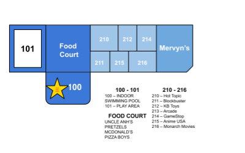
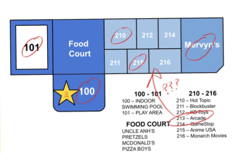

June 11, 2006
BLUE SKY MALL'S ARCADE
Ever been in Blue Sky Mall's arcade? 78% of Diamond Peak residents say yes, but the map says it doesn't exist. So, school's out and so are we, baby. And we’re looking for answers.
Built in December 1998 to “bring the shopping spirit into Diamond Peak” (via Blue Sky Mall’s now defunct website), the Blue Sky Mall attracted moderate attention throughout its lifespan. The most popular complaint is getting lost way too easily, a well-regarded witness has personally walked into Hot Topic only to end up in the children’s section at Mervyn’s. I heard a rumor from acclaimed local theorist, Krev (I don’t know his last name), that its indoor pool was actually intended to be an indoor water park. Regardless, the mall closed in 2004 because of a drowning in the pool, but I have no doubt it was intentionally to sabotage our investigation.
But we move on! Things like fences and boarded up windows won’t stop us. The Blue Sky Mall might be full of bad ideas, BUT it definitely has something going on.

Look at the map. 213 isn’t marked at all. Yet, if you’ve been to the mall, you’ve probably been in the arcade. Even against your will. So, you, the naive Diamond Peak police officer named Nick whom I spoke to over the phone, who said, “They probably just forgot to include it on the map. This line is for actual crimes.” ARE WRONG!
My theory: the arcade was built, but it got swallowed. Do you ever remember clearly going to the arcade? Almost everyone I spoke to just wandered in there. There’s no employees working there, either. I tried the different routes, but they only work once or they don’t work at all. What’s the logic here? But, I’ll keep searching.

Hiding this here on Krev's advice. Hey, to be honest, I don’t know exactly how to get into the arcade, only that you get there. But, each time I entered, I realize I never been past the door in the back. We opened it with Johnny’s crowbar, but something almost pulled us in. My head got caught briefly in there, but luckily, my rope caught me. Stay safe.